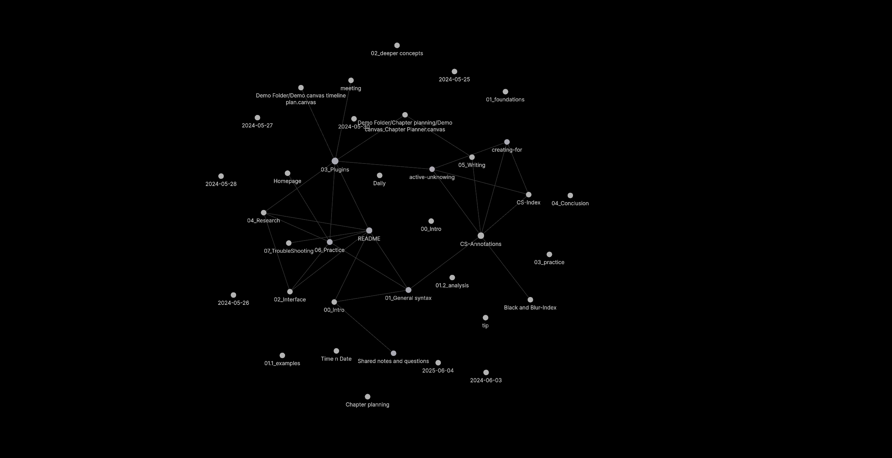

index
Welcome to my thesis portfolio!
This holds together the practice I undertook during my PhD alongside the thesis I wrote about it. This is all held together within a knowledge base made with obsidian. I decided to take this approach to the portfolio as I was reflecting on conversations with Creative Crowds (CC) around the Servpub project, and how they brought to the foreground the practices of their publishing process. Here taking a similar orientation I wanted to bring to the foreground my writing practice and approach to collating together thoughts and writings. These are especially important within this crip research, offering up the ways dyslexic and neurodivergent people can shape and hack their own knowledge making practices.
This crip research practice has taken on a lot of configuring thoughts and practices through diagrams and what are called canvases in obsidian. By offering this up I share how this practice has shaped this research and how it has made room for me to bring together my different inquiries.
The canvases are not very accessible in general, and I do acknowledge this, but they are what made this research come together so I feel they are important to share. They are not very mobile friendly, and work best with Firefox desktop browser from my testing.
To try to make them more accessible I have decided to do alt texts for them to try and share how they hold together the selected sections and entries.
Thesis canvas
This is a canvas that holds all of the chapters and practice together in one composition. This canvas also represents how these chapters flow together to bring together this research.
This is where it starts at the 01_Introduction and 08.01_Background, which gives an overview of the research. This then moves to link through to 03_Crip-Tic_of_Vignettes and 02_Disability_justice_and_life_affirmation_flipping_the_table which offer the critical framing of this research.
Practice
In this section I share the practice I undertook during my research and as part of my disobedient Action Research methodology. These are split here into different folders and graphs that represent the inquiries I undertook during for my research. As I state in the thesis these are very much entangled and make room for each other to emerge beyond this separation, but this has helped me to structure and emerge this research.
Inquiries
Below I go through these separate inquiries and explain how they have been split up and oriented.
08.01_Background
This section shares the practice I undertook with AI and automation before retreating towards community relations. In it I offer up some of these inquiries and outcomes of practice in a way to reflect on why I moved away from working with these technologies.
08.02_Configure-able_Infrastructures
![The event poster for "Configure-Able Infrastructures". It has a blurry background of greens, reds and blues. On top are a number of boxes outlined and linked by white dashed lines and filed with white text. The top box has the title of the event, and then connects to others, one holding "A set of workshops/talks creating dialogues around what configure-able infra can be", another stating "Melt, 19th July, Access sparks: incendiary emails for change making" and another with "Syster Server 2nd Aug, Organizing the anarcha feminist cyborg hacker uprising"](08_practice/02_configure-able/media/configure-able_infra_poster.png)
This section doesn't have a canvas as it is just one file. This shares in it the Configure-Able Infrastructures workshops I set up and ran with NEoN Digital.
08.03_In-Grid
This section shares the practice I undertook with members of In-grid collective. These range from focus groups, to accessible docs and workshops that orient critical access within intersectional collective practice.
08.04_Cozy-Cloud
This section shares the practice I undertook when emerging the Cozy-Cloud as a crip and life affirmation centred server space. This collaboration made room for us to crip network practices and make room for disabled people to imagine the futures of digital infrastructures with them in.
08.05_Knowledge Bases

This section also doesn't have a canvas, but shares the knowledge base practices that have made room for this research to emerge from. To do this it shares the materials for a workshop I ran with Batool Desouky called Making Sense With Obsidian.